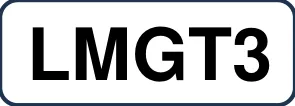

2026年WEC技術規則_LMGT3_日本語版
JAF の公式サイトではありません。JAF が公開する PDF を自動変換した非公式の検索用アーカイブです。記載内容は必ず JAF の原本 PDF で出典をご確認ください。 検索と AI 質問つきのビューアで開く
P.12026 FIA WORLD ENDURANCE
CHAMPIONSHIP
技 術 規 則
(LMGT3)
(2025 年10 月17 日付発行版仮訳)
P.22026 WEC TECHNICAL REGULATIONS - LMGT3 - 目次
目 次技術規則 LMGT3 第0 条序文 ··············································· 2
第1 条定義 ··············································· 2
第2 条一般原則 ··············································· 3
第3 条ボディワークおよび寸法 ··············································· 5
第4 条重量 ··············································· 6
第5 条パワーユニット ··············································· 7
第6 条燃料システム ··············································· 8
第7 条電気システム ··············································· 9
第8 条トランスミッション ··············································· 11
第9 条制動システム ··············································· 12
第10 条ホイールおよびタイヤ ··············································· 12
第11 条コクピット ··············································· 12
第12 条安全装備 ··············································· 13
第13 条燃料 ··············································· 13
第14 条ﾃﾚﾋﾞｶﾒﾗおよび計時ﾄﾗﾝｽﾎﾟﾝﾀﾞｰ ········································ 14
第15 条公認 ··············································· 14
第16 条性能の均衡化 ··············································· 16
第17 条終局条文 ··············································· 17
i
P.3FIA ACO
国際モータースポーツ連盟（FIA）Chemin de Blandonnet 2 1215 Genève Suisse www.fia.com
フランス西部自動車クラブ（ACO）24時間サーキットCS21928 72019 Le Mans Cedex 2 www.lemans.org

LMGT3
技術規則発行日：2025年10月17日
P.4第0条 序文0.1一般これらの規則は、ＡＣＯとＦＩＡの協力の結果であり、２０２４年１月１日から５年間（２０２８年末まで）適用される。0.2参加資格のある車両ＬＭＧＴ３（「ル・マン」ＧＴ３）クラスに出場できる車両は、次の条件を満たしていなければならない。 ＡＣＯ－ＦＩＡ ＷＥＣ認定の製造者パートナーが製造した車両モデル グランドツーリングカー（グループＧＴ３）の技術規則に準拠している（ＦＩ Ａ付則Ｊ項第２５７Ａ条） この現行技術規則の仕様に準拠している0.3 ＬＭＧＴ３公認ＬＭＧＴ３車両は、その製造者が記入し、ＦＩＡ／ＡＣＯが承認した特定の認証フォームに準拠していなければならない。ＬＭＧＴ３カテゴリーの車両モデルの公認は、特定の公認条件に従わなければならず、最初の競技の前に必須である。第1条 定義1.1 ＬＭＧＴ３サーキットやクローズドコースでのスピードレース専用に設計され、製造者によって公認されたクローズドカー。1.2自動車（Automobile）直線上に並べられていない少なくとも４つのコンプリートホイールによって走行し、少なくとも２つの車輪が操舵のために、また少なくとも２つの車輪が推進に使用される陸上車両をいう。1.3自動車の銘柄（Automobile make）自動車の銘柄とは完成車と一致する。製造者名は明瞭で目に見えなければならない。1.4製造者（Manufacturer）公衆消費および公道走行用に年間２,５００台を超える車両を生産する、広く一般に認められている自動車製造者をいう。1.5ボディワーク（Bodywork）ボディワークは、カメラ、およびエンジン、駆動系、および走行装置の機械的な機能に限定的に関連する部品を除き、外気流にさらされる車両の完全に懸架されているすべての部品をいう。エアボックス、ラジエターおよびエンジン排気装置は車体の一部と見なされる。1.6ホイール中心線（Wheel centre line）ホイールの中心線は、いずれも床面に垂直に静止している車両のタイヤのトレッド
P.5の中心を基準にして、コンプリートホイールの相対的な側面の2本の垂線の中間をいう。1.7重量（Weight）これは、イベント期間中いつでも、ドライバーとそのレース装備品を除いた車両の重量をいう。燃料を搭載していない状態でも計測できる。1.8電子的制御（Electronically controlled）半導体あるいは熱電子技術を利用する指令装置あるいは行程。ドライバーが作動させ、１つまたは複数のシステムに作用する単純なオートマチックでないオープンループの電気スイッチは、電子制御とは見なされない。このようなシステムもパッシブと呼ばれる。1.9クローズド・ループ電子制御システム（アクティブシステム）（Closed-loop electronic control system）クローズド・ループ電子制御システムとは以下の条件を備えたシステムをいう： 実際の値（制御変数）が連続的に監視される。 "フィードバック" 信号が目標値（参照数値）と比較される。 その比較結果に応じてシステムは自動的に調整される。このようなシステムもアクティブと呼ばれる。1.10 パワートレイン（Power train）内燃機関とそれに関連するトルク伝達システム、ドライブシャフトのトルク測定までをいう。1.11 ギアボックス（Gearbox）ギアボックスとは、パワーユニット出力シャフトからドライブシャフトへトルクを伝達する駆動ラインにあるすべての部品と定義される（ドライブシャフトは懸架質量から非懸架質量へと伝達する構成部品と定義される）。これには、動力の伝達やギアの機械的選択、これらの構成部品に関連するベアリング、およびそれらを収容するケーシングを第一の目的とするすべての構成部品が含まれる。1.12 ディファレンシャル（Differential）ディファレンシャルは、同じドライブトレインの 2 つの異なるホイールに接続された 2 つのドライブシャフトが、3 番目のシャフトによって駆動されている間に、異なる速度で回転することを可能にするギアトレインとして定義される。1.13 地上高（Ride height）基準面から地面までの距離。第2条 一般原則2.1 ＦＩＡ／ＡＣＯの役割および基本原則後述の技術規則はＦＩＡ／ＡＣＯよって発行される。本規則が明確に認めていないことは禁止される。
P.6車両はいかなる状況であっても、ドライバーのコントロール下になければならない。2.2規則の改定本技術規則は、タイトルで定められている開催中の選手権（以下「選手権」）に適用され、その年の１月１日以降、例外的な状況下でのみ変更される可能性がある。ただし、ＦＩＡ／ＡＣＯが安全上の理由で行った改訂は、事前予告および遅延なく発効する場合がある。2.3 危険な構造安全な車を製造することは、コンストラクターおよび製造者の責任である。ＦＩＡ／ＡＣＯは、車両の安全な構造を確保するために、あらゆる試験実施や情報を要求することができる。競技審査委員会は、危険とみなされる構造の車両を競技から除外または参加を禁止することができる。2.4規則の遵守車両は競技期間中、いかなる時でも以下に厳密に合致していなければならない： ＦＩＡ ＧＴ３技術規則（ＦＩＡ付則Ｊ項第２５７Ａ条）を遵守し、有効なＦ ＩＡ ＧＴ３公認書式を保持していること。 これらの規則を遵守し、有効なＦＩＡ／ＡＣＯ ＬＭＧＴ３追加公認書式を保持していること。 競技のスポーツ権能団体によって確立された公式の性能均衡化（ＢｏＰ）表。 ＷＥＣコミッティによって発行された追加の通知。本規定のいかなる解釈においても不明瞭であると感じた製造者は、ＦＩＡ／ＡＣＯ技術部に解釈を問い合わせ、ＷＥＣ競技について耐久コミッティで検証することができる。疑義が生じた場合は、これらの規則とＬＭＧＴ３公認書式が優先される。2.5計測すべての計測は、車両が平坦な水平面に静止した状態で行われなければならない。別途明確に定められていない限り、計測はこの水平計測面に対し、車両にホイールを装着した通常の状態で実施される。車両に関するすべての高さの測定は、基準面から、その面に対して垂直に行われる。関与する規定の意図するところを巧みに回避し無効にするためになされないことを条件に、特定の寸法について無制限の精度を想定することができる。2.6競技参加者の義務各競技参加者は、イベント期間中いかなる時でも自己の参加車両が本規則に完全に合致していることをＦＩＡ／ＡＣＯテクニカルデリゲートおよび競技審査委員会に立証する義務がある。安全に関わる特性を除き、ハードウェアあるいは素材の物理的査察により、車両の設計、構成要素および機構は、本規則に合致していることが証明される。規則への合致を保証する手段として、ソフトウェアの査察の結果を機械的設計の根拠とすることはできない。
P.7第3条 ボディワークおよび寸法
3.1一般ボディワークは１つのみが公認できる。ボディワークの調整可能な空力装置または装置組み立て品は１つだけ使用できる：リアウイング上で作用する。この装置の位置がどのようなものであっても、車両は常に本規則の付則に定められた空力基準を満たさなければならない。車両走行中の可動および／あるいは変形可能なボディワーク部品／要素は、禁止される。特に明記されていない限り、ボディワークに不連続部分がある場所にテープ／フィルム／フォイルの使用は許可されない。車両走行中に、自動的に、および／あるいはドライバーが制御し、空気流を変更する一切の装置は、本規定で明らかに許可されていない限り禁止される。コックピットの冷却を目的とする場合、電力が１５０Ｗ未満で、出口がコックピット内にある場合に限り、冷却ファンを使用することが許可される。冷却ファンの電力は、製造者が空力的利益が無いことを実証し、ＦＩＡ／ＡＣＯの承諾を受ける場合には、より高いものが認められる。3.2車両の下側3.2.1一般いかなる懸架された部品も基準面から下へ突出してはならない。3.2.2 地上高車両のいかなる懸架された部品も地上から５０ｍｍを下回ってはならない。この検査のため、タイヤ圧は１.５bar以上でなければならない。ドライバーによって制御されるか否かに関わらず、車両が停止しているときあるいは走行中に地上高を変更するように設計されたシステムは、その作動原理に関係なく一切禁止される。予選（ル・マンを除く）および/またはレース（特別な状況でない限り）中に車両の静的車高を変更することは禁止される。3.3空力的基準3.3.1 公認過程公認を取得するためには、車両のすべての空力構成がＦＩＡ ＧＴ３の空力基準を満たさなければならない。これらの基準は、ＦＩＡ／ＡＣＯの公式風洞で管理される。すべての空力構成は、空力マップを抽出するために、ライドハイトのフルスキャンが行われる（ボディワーク姿勢の違いによるドラッグ、ダウンフォース）。すべての車両は、最も空力的に優れた仕様構成で風洞実験に臨まなければならない。公認の手続きは、この技術規則の付則に記載されている。3.3.2 "空気力学的構成"の定義空力的構成とは、以下の組み合わせで定義される： コンプリートボディワーク
P.8 リアウイング角度 － 技術規則の付則に従って、公認範囲（最大設定と最小設定の差）が制限される ブレーキブランキングなし ＦＩＡ／ＡＣＯが適切と判断したその他の要素（例：ガーニー、フィラー、ダイブプレーン、ルーバーなど）。ブレーキブランキングは公認対象であり、以下のものでなければならない：
ダクトインレットに設置された堅牢で単純なクロージングプレート 風洞試験で提出されたもの 要求される空力的基準を満たすもの（特定のブレーキブランキング公差を含む）パワーユニット冷却オプションを含む他のタイプのブランキングは禁止される。3.4偏向ＦＩＡ／ＡＣＯは、車両が走行中に動きがあるとみられる（あるいはそのように疑われる）ボディワークのいかなる部分にも、負荷／偏向試験を実施する権利を留保する。コンストラクターはＦＩＡ／ＡＣＯの指示に従い、パッドおよびアダプターを提供しなければならない。その他の基準の中で、ＦＩＡ／ＡＣＯは弾性変形領域にわたって負荷／偏向曲線の線形性を検討する。一切の非線形性は塑性変形領域になければならない。偏向試験は、ＦＩＡ ＧＴ３公認規定の条項II - 12.0.cに従って行われる。3.5ボディワーク構造3.5.1 公差公認書式とその追加公認に記載されていない場合は、次の公差が適用される： 一般的なボディワーク：±５ｍｍ スプリッターとディフューザーの高さ：±３ｍｍ ガーニーの高さ：±１ｍｍ ウイングのプロファイル角度：±０.５° 第4条 重量4.1最低重量燃料もドライバーも含まない車両の重量は、競技中常にBOP表に定義されている最低重量を下回ってはならない。イベント期間中に交換された可能性のある一切の部品の重量検査は、車検員の裁量にて実施される。4.2重量配分重量配分（完成車両に対する前輪の）は、公差±０.５％で公認されていなければならない。第４条３項に従ってバラストの位置が１つであるため、重量配分は最小車両重量（ＢｏＰ表で定義）に応じて公認される。このチェックのために、車両は燃料なし、ドライバーなしの完全な状態でなければならない。競技中に確認する場合、重量配分の測定値は、指定された公差の範囲内で公認され
P.9た値に適合していなければならない。4.3バラストバラストは、指定された場所に固定され（同乗者領域）、取り外すのに工具が必要であり、すべての取付部は、あらゆる方向への最低２５Ｇの減速度に耐えることができることを条件に使用することができる。すべての固定具（サポート＋バラスト）は封印できるように準備されていなければならない。公認されたサポートはバラストの一部であり、必要に応じて取り外すことができること。可動式バラストは禁止されている。車両は、少なくとも70kgのバラストを受け入れることができるように設計されていなければならない。タングステン素材が使用できる。4.4液体重量は、タンクに液体が残った状態で、競技中いつでも検査できるが、プラクティスセッションあるいはレースの終了後、車両は重量計測前にすべての燃料が抜き取られる。第5条 パワーユニット
5.1騒音レベルすべてのコース上でのセッション中、各車両から発せられる騒音は100dB(A)の制限値を超えてはならない。測定は、コース端から最大15mの距離、コース地上高から3mの高さに設置されたマイクを用いて行われる。背景騒音レベルは、測定レベルより少なくとも10dB(A)低くなければならない。すべての測定は、クラス1騒音計を用いて実施される。5.2パワートレインの性能パワートレイン性能（ホイールでの出力）は、製造者によって宣言され、公認されなければならない： rpm/rpm_max の正規化された関数になる（rpm_max は最大 ICE rpm） 最大出力は「P0」 「P1」から「P20」までは、１％ずつ出力が低減される（「P0」から）。パワーユニットの使用は、複合パワーが最大パワー制限を下回る限り自由（設定、モード）。コース上のパワートレイン性能（付則に従って）は常にドライブシャフトトルクメーターで監視され、選択されたＢｏＰパワーを超えてはならない。最大パワートレイン性能は、参考周囲条件として示される。環境条件によって自然に性能が低下する場合、競技中にテクニカルデリゲートの裁量により、最大複合出力曲線は、次の補正係数を使用して環境条件に合わせて補正できる。
![（表内）標準状態：Pref = 1010 mbar, Pvap_ref = 12 mbar, Tref = 20°C Patmo（大気圧、mbar）、Tatmo（大気温度、°C）、Hatmo（大気相対湿度、％）第6条 燃料システム6.1燃料タンク注入口およびカップリングセンサー6.1.1 カップリングの寸法は付則Ｊ項第２５２条５図（バージョンＢ）のみ6.1.2 カップリングが車両に接続されている間、ＩＣＥおよび一切の動力供給電気モーターの始動を禁止する、少なくとも１つの近接センサーが義務付けられている。6.2給油6.2.1 常に、（車両ゼッケンのついた）給油装置および車両のタンクは、外気温度および大気圧に保持されていなければならない。それは常に付則Ａに従っていなければならない。6.2.2 車両内で直ぐに使用するための燃料は大気温度よりも摂氏10度を超えて低くてはならない。この規則の準拠を確認する際に、大気温度とは、ＦＩＡ／ＡＣＯ指名の天気予報提供業者が、一切のプラクティスセッションの１時間前あるいはレースの２時間前に記録した温度とする。この情報は公式計時モニターにも表示される。6.5.3 燃料の温度を下げるための車載装置を使用することは、いかなる装置であっても禁止される｡車載燃料の貯蔵容量を増大させる目的および／あるいは効果のある一切の装置またはシステムは禁止される。重力に厳密につながっていない原則を持つ一切の装置あるいはシステムは車載が禁止される。6.3燃料流量計(FFM) 6.3.1 １つの公認されたＦＩＡテクニカルリスト４５の燃料流量計の使用が義務付けられる。この流量計は，ＦＩＡテクニカルリスト４４に従って認定された研究所で較正したものでなければならない。6.3.2 燃料流量計は、供給ラインの高圧燃料ポンプの前に設置しなければならない。高圧燃料ポンプに供給されるすべての燃料の流れは、燃料流量計を通過しなければならない。燃料の戻りは考慮されない。](assets/fig-p0010-01.webp)
P.116.4燃料の排出およびサンプル抽出6.4.1 競技参加者は車両からすべての燃料を排出させる方法を提供しなければならない。6.4.2 競技参加者は、イベント期間中常に車両から１.０リットルの燃料サンプルを抽出できる状態を確保しなければならない。6.4.3 車両には、タンクから燃料を取り出すことができる自動閉鎖コネクターを備えていなければならない。このコネクターは、ＦＩＡ承認（テクニカルリスト５）のもので、エンジンの高圧ポンプの前および後の供給ラインに取り付けられていなければならない（ＦＦＭコネクターとの併用も可能）。車両に搭載されている電動ポンプで燃料を除去できない場合、代表的な燃料サンプルを抽出していることが明らかであることを条件に、外部に接続したポンプを使用してもよい。外部ポンプを使用する場合は、ＦＩＡ／ ＡＣＯサンプル抽出ホースを接続することが可能でなければならず、車両とポンプの間の一切のホースは直径３インチでなければならず、長さ２ｍを超えてはならない。6.5 １スティントあたりの使用エネルギー6.5.1 スティントごとのエネルギー消費量は、ドライブシャフトトルクセンサーの積分から計算される。レーススティントの場合、消費量の計算はピットアウトからピットインまで考慮される。レースの最初のスティントの場合、消費量の計算は、レースの公式スタート時のスタートフィニッシュラインからカウントされる。レースの最後のスティントの場合、消費量の計算は、チェッカーフラッグのフィニッシュラインで停止する。１スティントあたりの使用エネルギーは、ＢｏＰ表により各競技に定めるＥ（単位： ＭＪ）を超えてはならない。総エネルギー消費量がマイナスになった場合、競技参加者にペナルティが課せられる。その場合、エネルギー消費量の不足分は、次のピットストップで規定された割合で補う必要がある。給油中にパワーサイクルを行うと、給油時間に準拠しない結果となる。第7条 電気システム
7.1コンプライアンスおよび安全条項クローズド・ループ電子制御システムは、本規則で明確に許可されていない限り禁止される。ただし、以下の場合は明らかに許可されている： あらゆる電気モーター（例：ワイパーモーター、燃料ポンプ、電気制御されたギアシフトなどがあるが、これらに限られない）用。 単一のギア選択機構の場合 単一のクラッチ作動機構のためのもの
P.12 エンジン（ＩＣＥ）制御用 Ａ／Ｃシステム用 補助電気回路管理制御（パワーボックス）用。 ＡＢＳ用ＦＩＡ／ＡＣＯは、イベント期間中いつでも、義務付けられる一切の電子安全システムの動作をテストすることができなければならない。7.2補助回路およびバッテリー競技参加者は、装着が義務付けられた装置（データロガー、ＡＤＲ、プロモーター情報表示など）の操作に必要な電力（最大１６ボルト）を提供しなければならない。7.3灯火装置灯火装置は常に作動状態を保っていなければならない。すべての追加ライトは、公認されたとおり、すべてのイベント期間中、車両に恒久的に取り付けられたままでなければならない。車両には以下が取り付けられなければならない： 7.3.1 指示器車両の前後の両側に方向指示器。それらはスローゾーンとフルコースイエローの条件を満たすための速度制限が適用されると同時に点滅しなければならない。スローゾーンとフルコースイエローの速度制限のための方策が車内に実施されていなければならない。点滅周波数は４Ｈｚ（０.１２５秒ＯＮの後、０.１２５秒ＯＦＦ）。7.3.2 表示灯いかなる車両も、位置決めおよび彩色（青、赤あるいは緑の変化色は許可されない）で、安全ライト（衝撃警告）の妨げとなる表示灯を使用してはならない。例としては次のようなものであるが、それに限られない：ウインドスクリーンの後方でいくつかの類似した色を使うことは認められない。フロントライトコンパートメント内では、任意の色が許可される。この表示灯の位置は ＦＩＡ／ＡＣＯによって承認され、対応する公認フォームで宣言されなければならない。7.3.3 レインライト点滅周波数は４Ｈｚ（０.１２５秒ＯＮの後、０.１２５秒ＯＦＦ）でなければならない。7.4 ＦＩＡ／ＡＣＯロギング要件ＦＩＡ／ＡＣＯの義務付けられるロギングセンサーは、本規則の付則に記載されている通りでなければならない。すべてのＦＩＡ／ＡＣＯロギングセンサーは、承認されたＦＩＡ／ＡＣＯ供給業者によって提供されなければならない（ＷＥＣについてはテクニカルリスト４６）。それらはＦＩＡ／ＡＣＯのデータロガーに直結されなければならない。これらのセンサーの信号は、特に指定がない限り、ＣＡＮを介して競技参加者に送られる。公認された流量計およびトルク計測器を含めたＦＩＡ／ＡＣＯロギングセンサー配線束は、コンストラクター／製造者により製作され、ＦＩＡ／ＡＣＯによって承認されなければならない。
P.13唯一認められるＧＰＳは、義務付けのロギングシステムからのＡＣＯ／ＩＭＳＡのＧＰＳであり、車両頂部に水平に、他のアンテナから５００ｍｍ以上話して設置しなければならない。ＦＩＡ／ＡＣＯデータロガーは衝突時にケーブルが損傷するのを防ぐため、ＡＤＲセンサーの近くで、コクピット内に搭載されなければならない。7.5データ取得ＦＩＡ／ＡＣＯは、あらゆる走路走行セッションの前、最中、後に、以下のＥＣＵ情報に無制限にアクセスできなければならない。 アプリケーションのパラメータ設定。 記録されたデータや事象。データ取得は許可されたセンサーに限られる。センサーのリストは公認されなければならない。許可されているセンサーは、本規則の付則に記載されているもののみである（記載されていない限り、各種類の数に制限はない）。これらの規則の付則に記載されているセンサーからの信号は、ＣＡＮによって ＦＩＡ／ＡＣＯ データ収集システムに送信されなければならない。7.6テレメトリー以下のみが車両とピット間の連絡に認められる： ピットサインボード上の読み取り可能なメッセージ。 ドライバーのジェスチャーによる合図。 車両からピットへのテレメトリー信号。 ドライバーとピットとの双方向の無線のやりとり。そのようなすべての交信は公開され、ＦＩＡ／ＡＣＯにも傍受可能で利用できるものでなければならない。7.7本コースシグナル情報表示すべての車両は、強制的にマーシャリングディスプレイを装着しなければならない。7.8インパクトライト（衝撃警告ライト）救助隊に事故損傷度を即座に知らせるために、各車両には、承認された供給業者により提供される２つの警告灯（テクニカルリスト４６）を取り付けなければならず、ＦＩＡ／ＡＣＯデータロガーに接続されなければならない。これらの警告灯は外部消火器スイッチの近くに設置し、ウインドスクリーンの下部の両側から見えるようにしなければならない。7.9ディスプレイパネル（表示パネル）各車両には、車両の両側（ドア上）に２つの電光表示のディスプレイパネル（電子パックで定義）を装備しなければならない。第8条 トランスミッション
8.1トラクションコントロール車両には、動力による車輪の空転を防止したり、ドライバーによる過剰なトルク要求を補正したりする閉ループシステムや装置が装備されている場合がある。
P.148.2トランスミッションの切り離しすべての車両は、付則Ｊ項第２５７Ａ条－第１３５０項に従い、トランスミッションの切り離しスイッチが取り付けられていなければならない。8.3ギアレシオ特定のル・マンギア比オプションは公認を受けることができ、ル・マン競技期間中のみ使用でなければならない。8.4ギアチェンジオートマチック式ギアチェンジはドライバー補助とみなされ、従って認められない。ギアチェンジを目的としたクラッチとパワーユニットのトルクはドライバーの制御下である必要はない。瞬間的なギアシフトは禁止される。第9条 制動システム
9.1冷却ブレーキの液体冷却は禁止される。ブレーキ（ディスク、パッド、キャリパー、リム）に冷却空気を送るために使用される開口部、チャネル、およびアダプターは、公認されなければならない。これらの開口部のマスキング比は公認されなければならない。第10条 ホイールおよびタイヤ10.1タイヤの処理タイヤを膨張させることができるのは、空気、あるいは窒素のみである。製造者が供給するタイヤの物理的特性を変える可能性のあるトラクションコンパウンドやいかなる物質も使用してはならない。10.2空気圧式ジャッキ認められる。しかしながら、スターティンググリッド上では、エアホースをエアジャッキに連結する連結機能は、エアホースが外された時に車両がエアジャッキ上に保持されるシステムを有していなければならない。このジャッキの操作のために、圧搾空気ボトルを車両に搭載することは認められない。第11条 コックピット
11.1 冷却/空気調整ドライバー・コクピット冷房／空調設備の搭載および使用は、ＦＩＡ ＧＴ３にて公認された通りのものが義務付けられる。11.2 ドライバー冷却装置ドライバー用の追加冷却システムは許可される。車両に搭載されている場合、このシステムの重量は車両の最低重量に含まれる。固
P.15定具は、あらゆる方向で最低25Gの減速に耐えなければならず、その使用は現行の安全基準に準拠していなければならない。第12条 安全装備
12.1一般一般的原則として、車両が安全な構造であることを実証するのは製造者および／あるいは競技参加者の責任である。ドライバーが運転席に完全に座っていないときは常に、車両の動力的な動きを防止する装置がなければならない。安全のためのスイッチや押しボタンのレバーを、いかなる種類の粘着性タイプで覆うことは厳禁とされる。コックピットに設置されたあらゆる要素とその固定具は、あらゆる方向で最低25gの減速に耐えられなければならない。12.2 後方視界ミラー12.2.1 リアビューミラーには昼間／夜間モードがなければならない。ミラーにフィルムを追加することでそれを実施できる。12.2.2 後方視界用カメラ装置の搭載が必須である。12.3 吊り上げ装置すべての車両には承認を受けた安全吊り上げ装置が装備されていなければならない（ＦＩＡテクニカルリストＮｏ．１０４参照）。吊り上げ用ブッシュは利用しやすい位置にあり、次の通り特別なマーキングで示されていなければならない： 開口部周囲を太さ５ｍｍの円でマーキング（シグナルカラーであるか、輝度反射特性のもの）されていなければならない。ブッシュが横から見て見えない場合、横から見えるように（片側に１つの）矢印（シグナルカラーであるか、輝度反射特性のもの）が利用されなければならない。 開口部域は、吊り上げピンを挿入する必要がある場合、それの障害とならないよう、コース上からの破片飛散の危険性に備えて覆われていなければならない。覆いとなるステッカーは、グローブをしたマーシャルが容易に剥がすことができ、正確で完全な吊り上げピンの挿入ができるようなものである必要がある。堅牢なカバーは一切禁止される。第13条 燃料
13.1 燃料供給オーガナイザーが供給する燃料は１種類のみで、その化学組成に変更を加えることなく、すべての車両に使用されなければならない。13.2 燃料仕様ガソリン。仕様については要求のあり次第提供可能。
P.16第14条 テレビカメラおよび計時トランスポンダー
14.1 カメラおよびカメラハウジングの搭載すべての車両には、ACOに指定されたカメラあるいはカメラハウジングが、イベント期間中、常に搭載されていなければならない。テクニカルリスト４６に準拠した後方を向いたカメラが義務付けられる。その信号は公式テレビに接続される。プロモーターの要請があれば、フロントおよび／またはリアバンパーに追加カメラを取り付けることができる。そのために、バンパーに穴を開ける必要がある場合は、追加カメラの視界を確保するためだけに、正しいサイズの穴を開けなければならない。カメラを取り付けない場合は、この穴を塞がなければならない（テープ、ステッカーは可）。バンパーの変更は、最終承認のために ＡＣＯ／ＦＩＡに提出されなければならない。14.2 ドライビングカメラ走行データを取得し走行分析するための独自の車載カメラシステムは認められる。このシステム、その位置、固定方法は自動車製造者により公認されなければならない（固定方法はどの方向でも最低２５Ｇの減速度に耐えられなければならない）。カメラシステムは、ドライバーの視界を妨げず、緊急時のドライバーの退出や脱出を妨げてはならない。14.3 トランスポンダーすべての車両は、正式に任命された計時員より供給されたタイム計測トランスポンダーを２つ搭載しなければならない。これらのトランスポンダーは本技術規則の付則に記載されている仕様に厳密に従い取り付けられなければならない。競技参加者はトランスポンダーが常に作動している状態を確実にするため最大の努力をしなければならない。フロントトランスポンダー（メイン）は、車両のフロントから１８００±５００ｍ ｍの位置になければならない。リアトランスポンダー（バックアップ）は、メインのトランスポンダーから前後方向で後方へ少なくとも９００ｍｍの位置になければならない。（横方向の位置に関して制約はない － 両者の間についても同様）。第15条 公認
15.1 原則公認手続きは、特定のＬＭＧＴ３技術規則に基づいて ＦＩＡ／ＡＣＯによって管理され、車両の当初のＦＩＡＧＴ３書式の追加公認書式が発行される。製造者はＬＭＧＴ３車両を公認することができ（２０２４年から２０２８年まで）、追加公認は２０２８年１２月まで有効となる。公認車両の製造者と使用者は共に、イベントで使用される車両が対応する車両公認書類一式に準拠していることを証明するために、ＦＩＡ／ＡＣＯ の絶対的な裁量で要求される手段をいつでも講じなければならない。公認の原則に違反した場合、製造者には罰則が科せられる。車両の参加資格が取り消されるまでのペナルティとなる可能性がある。
P.1715.1.1 オリジナルの追加公認に対する変更は、次の理由で要求される場合がある: 安全性、信頼性、サービス性、商品化の終了またはコスト削減 パフォーマンス15.1.2 安全性、信頼性、サービス性、商品化の終了、またはコスト削減のために要求される修正は以下の手順に従わなければならない： 適用される公認の手順に従うこと。 申請には、必要に応じて、レース中の故障の明確な証拠を含む、すべての必要な裏付け情報を提供しなければならない。ＦＩＡ／ＡＣＯは、その絶対的な裁量により、これらの変更が容認可能であり、ＢｏＰプロセスに沿ったものであると判断した場合、当該製造者に要請が承認されたことを確認する。15.1.3 パフォーマンス上の理由で修正を要求された場合：以下の条件を満たさなければならない： 第１５条４項で定められたカレンダーに従って要求される。 適用される公認手順による。 申請書には、目標とする性能向上、その進化、および必要に応じて最新のデータシートなど、必要なすべての裏付け情報を提供しなければならない。ＦＩＡ／ＡＣＯは、その絶対的な裁量により、これらの変更が容認可能であり、BoPプロセスに沿ったものであると判断した場合には、当該製造者に要請が承認されたことを確認する。15.2車両の公認15.2.1 ２０２４年から２０２８年の間にＦＩＡ／ＡＣＯの競技で競技参加者が使用するＬＭＧＴ３車両を追加公認しようとする製造者は、第１５条４項に定められたカレンダーに従って、ＦＩＡ／ＡＣＯに公認資料を提出しなければならない。15.2.2 公認書類一式には以下が含まれなければならない： ＣＡＤ図面および本規則の付則で要求されるその他の文書。本規則の付則に記載されているテンプレートでの公認書式。15.2.3 ＬＭＧＴ３追加公認は、関連する製造者から完全な公認書類一式が提出され、ＦＩ Ａ／ＡＣＯによって承認された時点で、公認されたことになる。15.2.4 この公認は、２０２８年１２月まで有効となる。15.2.5 製造者は、公認期間中に、第１５条１項に従って、追加公認に対して改造を行うことをＦＩＡ／ＡＣＯに申請することができる。15.2.6 ２０２４年から２０２８年の間にＬＭＧＴ３追加公認をしようとする新規製造者は、第１５条２項１および第１５条２項２に基づく公認書類一式に加えて、第１５条４項に定めるカレンダーに従う車両の予備的な詳細をＦＩＡ／ＡＣＯに提供しなければならない。提出されたＬＭＧＴ３追加公認車両を公認するためには、ＦＩ Ａ／ＡＣＯも、その絶対的な裁量により、そのような車両が他の公認された車両と
P.18公平かつ公正に競うことができると納得しなければならない。15.2.7 公認車両の製造者と使用者は共に、イベントで使用される車両が対応する車両公認書類一式に準拠していることを証明するために、ＦＩＡ／ＡＣＯ の絶対的な裁量で要求される手段をいつでも講じなければ。15.3許される改造以下のアイテムは追加の書類なしに改造できる。 ヘッドレスト フットレスト ペダルパッド15.4公認カレンダー15.4.1 基本公認選手権年（ｎ）に資格を得るには、意向書と一般プレゼンテーションが年（ｎ－１）の７月１日までに完了していなければならない。
| 月 | 12ヶ月 | 11ヶ月 | 10ヶ月 | 9ヶ月 | 8ヶ月 | 7ヶ月 | 6ヶ月 | 5ヶ月 | 4ヶ月 | 3ヶ月 | 2ヶ月 | 1ヶ月 | REF |
|---|---|---|---|---|---|---|---|---|---|---|---|---|---|
| 車両公認－達成するべき公認の締め切りステップーREFは最初のイベントの日 | |||||||||||||
| 意志確認書 | | ||||||||||||
| 全体ﾌﾟﾚｾﾞﾝﾃｰｼｮﾝ | | ||||||||||||
| ﾄﾞﾗﾌﾄ公認書類提出 | | ||||||||||||
| ﾌﾙｽｹｰﾙ風洞実験 | | ||||||||||||
| ﾎﾞﾃﾞｨﾜｰｸｽｷｬﾝおよび車両査察 | | ||||||||||||
| 最終CADﾎﾞﾃﾞｨﾜｰｸ提出(合格し た通りの) | | ||||||||||||
| 最終CAD機械的機構提出 | | ||||||||||||
| 最終公認書類提出 | |
最終公認書類提出 15.4.2 追加公認 月
| 月 | 6ヶ月 | 5ヶ月 | 4ヶ月 | 3ヶ月 | 2ヶ月 | 1ヶ月 | 15日 | REF |
|---|---|---|---|---|---|---|---|---|
| 安全性、信頼性、サービス性、商品化の終了、コスト削減、パフォーマンス - | ||||||||
| 公認期限までに達成すべきステップ - REF は最初のイベントの日付 | ||||||||
| 全体プレゼンテーション | | |||||||
| 公認書類 － 草案 | | |||||||
| 公認書類 － 最終 | |
公認書類 － 最終 第16条 性能の均衡化
クラス内およびクラス間の車両間の等価競争力を維持するために、ＦＩＡ／ＡＣＯはバランスオブパフォーマンス（ＢｏＰ）手順を使用して、仕様に対する調整を義務付ける。
P.19性能の評価は、ＦＩＡ／ＡＣＯが提供する車両検査データロガーと公式な計時および採点を含み、それに限定されることはなく、観測されたパフォーマンスデータを用いて評価される。車両の性能を調整するために、以下の調整が可能である：
重量 パワー スティントあたりのエネルギー 燃料補給時間 空力学的仕様構成の変更および／または制限その他適切と思われる調整第17条 終局条文
規則の解釈に疑義が生じた場合についてはフランス語版のみが有効とされる。